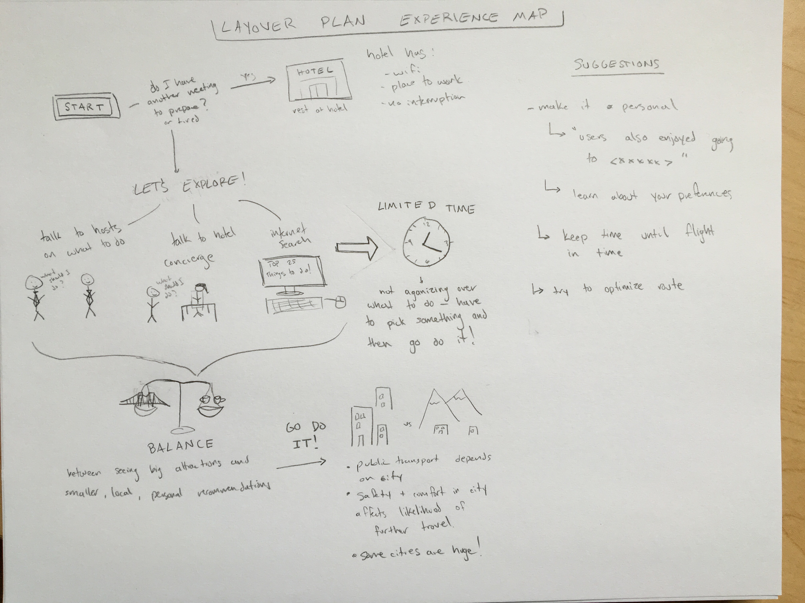

Needs Analysis
Narrative:
Immersion Isabella is traveling while taking a semester off from school and arrives in Rome while on her journey across Europe. With no work to do and a pretty flexible timeline, Isabella wants to spend her time seeing what the locals love about their city. She is only staying there for one day, as she doesn’t know anyone in the area that she can crash with, as she does with all the other places that she travels. Isabella wants to do the things in the city that aren’t the big ticket, touristy attractions, rather, she wants to do the local attractions and get a feel for the culture. She’ll probably go visit a family run pasta shop than go to the Trevi Fountain, or go visit the home of a famous artist from the area rather than go to see the Vatican. Isabella likes making connections with the locals and really immersing herself in the traditions and customs of the area, using any friends she has in the area or who have been to the area to help her figure out what to do with her day there.
Business Bernard has to travel often due to his obligations as Senior Director at his tech company. After a recent trip to Japan, he finds himself on a 7 hour layover in the Chicago airport. He would usually just rebook his flight to an earlier time as his company would pay for any travel expenses, but there are none available. He is anxious to get back to his office in San Francisco, as there are many things from his business trip that he would like to address. However, there’s nothing he can do beyond checking emails at the airport, as the required materials and people are unavailable. Bernard doesn’t like to waste time, so he decides to take advantage of his layover to see some of the nearby sights, or perhaps find a more comfortable place to do some local work on his laptop. His main priority is still getting back to his office, so it is imperative to Bernard that he doesn’t miss his flight. On a quick Google search, he finds some nearby museums and coffee-shops. Since he doesn’t know for sure that he’ll be able to visit the museums and be back in time, Bernard settles for the closest coffee shop with the highest rating to wait out his layover.
Monument Maria is in London for a few days for business, and she has some time between meetings throughout the day for touring and sightseeing. She has a lot of work to do, but really wants to be sure she sees all the major landmarks. She knows what she wants to do, but not necessarily how to get there and in what order she should visit places to squeeze the most out of her free time. Maria tends to travel by herself, so she doesn’t have to worry about sticking with a group or doing things anyone else wants to do. It’s important to her to see as many of the sights as she can without taking too much time away from the work she has to do.
What problem are you proposing to solve?
We are proposing a solution to the common problem of planning activities to do while traveling. Specifically, we want to simplify the day trip planning process, making time less of an obstruction and catering to each user's individual travel style. Current travel sites over-complicate the process and offer too many choices for trips, including hotels, car rental, flights, etc. This problem applies to people on spontaneous day trips due to layovers, extra business trip days, or just the adventurous type.This way, our users can spend less time planning things to do, and more time doing them, while maintaining an airtight schedule for how long the trip will take.
We want to make planning time less of an obstruction for day trips. This way, our users can spend less time planning things to do, and more time doing them, while maintaining an airtight schedule for how long the trip will take. Another possible benefit would be planning transportation means, to better facilitate our users ability to get to and from their destination.
Who matters?
People who have a limited amount of time in a new city, and want to visit their places of interest without having to do too much planning beforehand.
These people can be business people with a free day between meetings in a foreign city, travellers stuck on an extended layover, or even the adventurous type only visiting a city for a day as they pass on through.
How do your prospective users think about this problem/activity?
Currently, users run into time constraints in many aspects of travel. From planning, to transportation, managing time is of the highest priority. Often, users are so afraid of missing a flight during layover, they will not leave the airport. Even while in a city for a prolonged period, planning to do things takes a while, and seems to involve aggregating data from many sources, including friends who have been there, locals, and the internet. After locating the top priority sites or activities, finding suitable transportation which can keep to a strict timeline can become problematic. Beyond this, our users expressed many different opinions about travelling with others. Some said that sharing the experience with another person was always better, while other expressed their desire to be independent and travel alone. In situations where a user has repeatedly visited the same location, the top attractions in the area may not be interesting as they have already been seen. In this case, finding the new things in the area becomes more important. Any of these issues alone can be enough to prevent travellers from getting a rich experience in the area they visit. All together, they create an interesting problem set which we will strive to design towards.
What requirements must your solution satisfy?
Our solution must satisfy the user across multiple problem areas. We must first focus on timing, since our users are often constrained on time. That can manifest in an extended layover, an extra day between business meetings, or even just passing through. Our solution must accommodate all of these types of travel while maintaining a focus on location and timing, allowing our users to not miss flights or meetings. Next, our solution must simplify the day planning process. Current solutions are overly complex for planning only one day of events, as they might list 'Top 25 things to do in ____,' putting the burden on the user to select from there. Our solution should offer simple features and filtering options, empowering the user to quickly decide on an activity and go do it rather than waste time making the 'perfect' travel plan. Finally, our solution must accommodate for different type of people and the activities they enjoy while travelling to a new place. We found our users have a wide range of energy levels, some wanting to catch up on work at a coffee shop while others wanting to climb a mountain in the new city. Moreover, some users prefer to visit the local, more intimate settings they hear about while others want to see the big, tourist attractions, like the Eiffel Tower, for example. Our solution should ideally feel like a personal travelling companion rather than an aggregation system of ideas.
What will the impact of a successful solution be?
If our solution is successful, the impact on travelers will be decreased stress from planning activities while increasing the ease with which they can plan those activities. Our goal is that, instead of spending a large amount of time planning what to do in the city, and thereby wasting some of the travelers’ short time there, our solution will cut down on that planning time so that people can focus on the actual experience of being in a new city. Our solution would also provide people with peace of mind, knowing that the activities they have planned will fit in their schedule, whether it be limited by meetings, departures or hanging out with friends. We hope to accomplish this by including travel time and estimated stay for each of the activities that the traveler chooses to do. An additional success that could be a side effect of our solution is the increase traffic to previously unknown attractions. By introducing travelers to local attractions that they may not hear about through other planning systems, our solution could help boost income to that locale, benefiting not only the traveler, but also the city they are visiting and the people who live there.
Limitations + Shortcomings:
Our solution will not take flights, hotels, car rentals, or any of the technical details of travel planning into account. We are assuming that is taken care of, as we simply focus on a day or partial day trip for our users. The idea is not to actually book anything for the user, but to give them a plan they can follow if they want to.
Design Artifacts
Experience Map
User Requirements and Needs